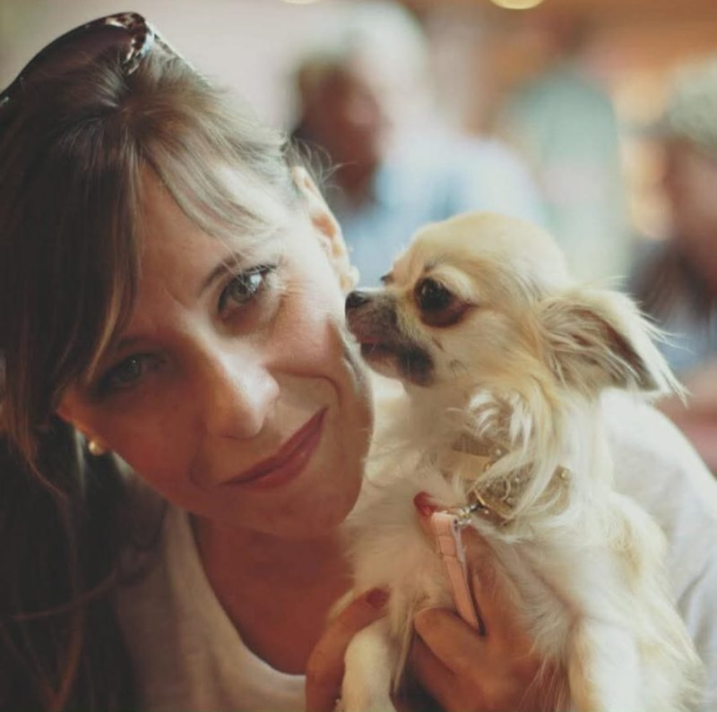

Chi siamo
Una famiglia, prima che un allevamento
Dietro Il Tocco della Rosa ci sono poche persone e tanti cani. Ci occupiamo di tutto in prima persona: le cure quotidiane, le nascite, le vaccinazioni e la scelta delle famiglie.
Roberto
Segue la parte organizzativa dell'allevamento: la programmazione delle cucciolate, le genealogie, i documenti ENCI e i contratti. Per lui ogni accoppiamento è una scelta ragionata, fatta pensando ai cuccioli che verranno. Alleva Chihuahua dal 2018 e segue personalmente ogni pratica, dal Libro genealogico alla consegna dei cuccioli.

Rosa
È spesso la prima voce che senti quando ci scrivi su WhatsApp. Conosce i cani uno per uno e segue da vicino le mamme e i cuccioli nelle prime settimane. È lei a dare quel tocco di cura in più che ogni famiglia ritrova nei nostri cuccioli.
Il nostro modo di allevare
Cosa ci sta a cuore
Il Chihuahua è un cane che vive in simbiosi con le persone. Per questo i nostri cuccioli crescono in casa, non in un box: sentono i rumori di tutti i giorni, vengono presi in braccio, imparano a fidarsi.
Scegliamo con attenzione anche le famiglie: preferiamo una telefonata in più e un cucciolo ben sistemato.
- Poche cucciolate l'anno, mai più di quante riusciamo a seguire bene.
- Fattrici iscritte al Libro genealogico ENCI e accoppiamenti scelti guardando salute e carattere.
- Prime due vaccinazioni fatte in allevamento, a 8 e a 12 settimane.
- Ogni cucciolo parte con microchip, libretto sanitario e contratto di vendita scritto.
- Ci fa sempre piacere ricevere notizie e foto dei cuccioli nelle loro nuove case.